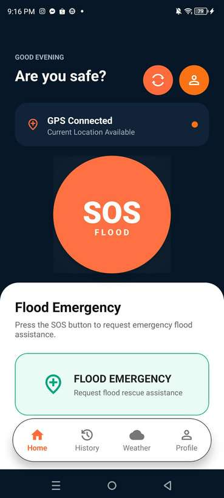
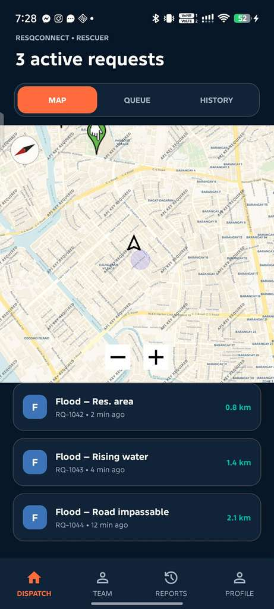
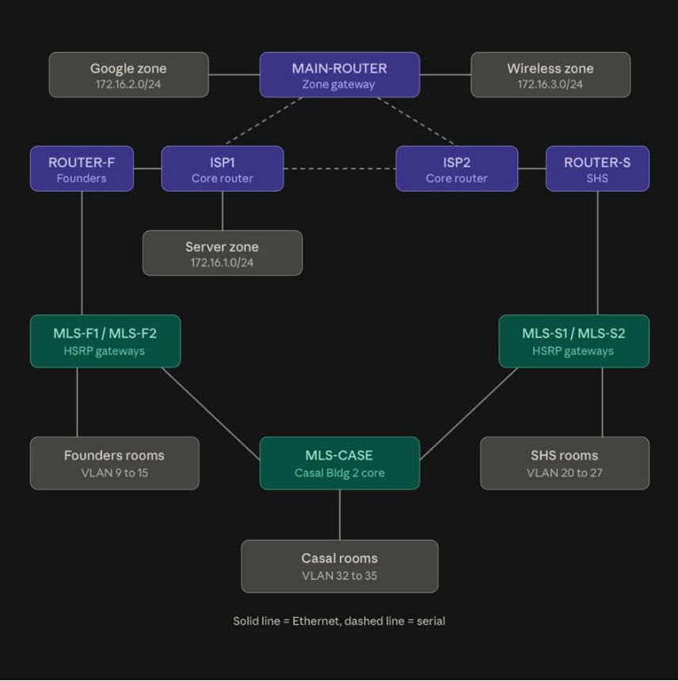

I’m Loryen Art Dela Cruz, a web and software developer studying Computer Science at TIP Manila. I like a button that feels just right to click, and I’m just as curious about the code that wakes up when you do.
Four projects across Android, desktop, web, and networking. Open a case study for the stack, scope, and my contribution.
Showing 4 projects
FEATURED / ANDROID PROTOTYPE01


Inside the rescuer dashboard
ResQConnect
A flood-response Android prototype that connects community SOS requests with rescuers tracking them on a map.
My role I built the full backend and integrated the maps on a four-person team.
KotlinSupabaseosmdroid
JAVA DESKTOP / DATABASE02
Better records. Smoother circulation.
A desktop library system connecting inventory, students, and borrowing records in one organized workflow.
My role Lead developer on a four-person academic team.
Java SwingOracle SQLJDBC
PERSONAL WEBSITE / RESPONSIVE03
loryen / portfolio
Web & software developerI build websites. And what powers them.Explore my projects
The website you’re exploring right now.
A home for my software work and freelance services. Visitors can explore case studies, compare hourly rates, and draft a project inquiry.
Project focus Responsive layouts, keyboard navigation, and scroll effects that respect motion preferences.
HTMLCSSJavaScriptResponsive design
CAMPUS NETWORK / TOPOLOGY04

Separate departments. Shared services.
A campus network design that separates department traffic with VLANs and plans how devices receive addresses and reach shared services.
Project focus VLAN segmentation, addressing, and shared-service planning in Cisco Packet Tracer.
Cisco Packet TracerVLANsDHCP & DNS
02 / A LITTLE ABOUT ME
Practical software. Thoughtful experiences.
I enjoy connecting the logic behind an application with the experience people actually use.
I’m a Computer Science student at the Technological Institute of the Philippines, Manila, with a focus on software and website development.
For ResQConnect, I developed the full application backend and integrated its map features as part of a four-person team. My other work includes Java desktop software, and I’m continuing to develop my skills in building for the web.
HTML · CSS · JavaScript Responsive layouts · Web fundamentals
04 / FREELANCE SERVICES
Website rates.
Hourly Rates
Business landing pages and simple websites
Starts at $8/hr
Website updates and fixes
Starts at $8/hr
Interactive features Slideshows, filterable galleries, and project or product dialogs.
Starts at $10/hr
Simple third-party integrations Hosted contact forms and embedded booking widgets.
Starts at $12/hr
I’ll estimate the hours and total cost before starting and ask for your approval before going over. Testing, revisions, and deployment are billed at the agreed rate. Domain, hosting, and third-party fees are separate.
PLANNING TOOL
Estimate a project
Choose a service and enter the hours you have in mind. I’ll confirm the scope before quoting.